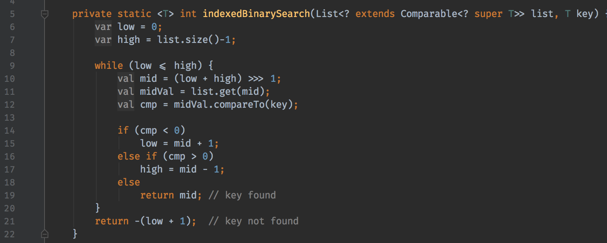

Java is a general-purpose computer-programming language that is concurrent, class-based, object-oriented, and specifically designed to have as few implementation dependencies as possible. It is intended to let application developers "write once, run anywhere" (WORA), meaning that compiled Java code can run on all platforms that support Java without the need for recompilation.[17] Java applications are typically compiled to bytecode that can run on any Java virtual machine (JVM) regardless of computer architecture. As of 2016, Java is one of the most popular programming languages in use, particularly for client-server web applications, with a reported 9 million developers. Java was originally developed by James Gosling at Sun Microsystems (which has since been acquired by Oracle Corporation) and released in 1995 as a core component of Sun Microsystems' Java platform. The language derives much of its syntax from C and C++, but it has fewer low-level facilities than either of them.
The original and reference implementation Java compilers, virtual machines, and class libraries were originally released by Sun under proprietary licenses. As of May 2007, in compliance with the specifications of the Java Community Process, Sun relicensed most of its Java technologies under the GNU General Public License. Others have also developed alternative implementations of these Sun technologies, such as the GNU Compiler for Java (bytecode compiler), GNU Classpath (standard libraries), and IcedTea-Web (browser plugin for applets).
The latest version is Java 10, released on March 20, 2018, which follows Java 9 after only six months in line with the new release schedule. Java 8 is still supported but there will be no more security updates for Java 9. Versions earlier than Java 8 are supported by companies on a commercial basis; e.g. by Oracle back to Java 6 as of October 2017 (while they still "highly recommend that you uninstall" pre-Java 8 from at least Windows computers).
